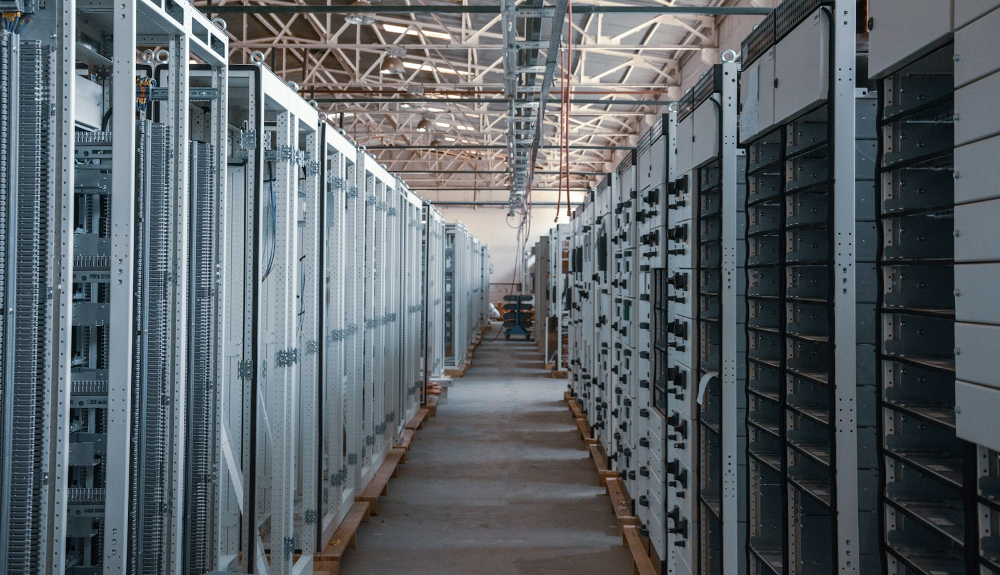
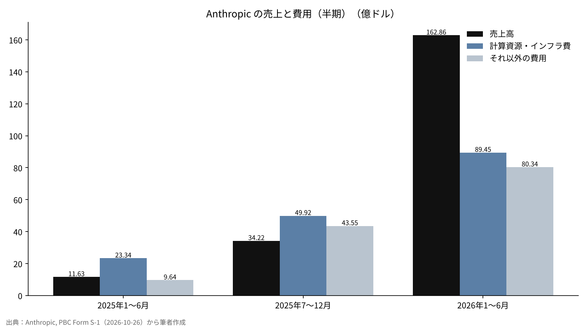
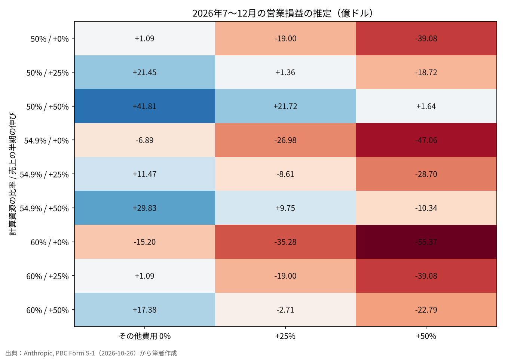

AnthropicのS-1を読む――黒字はいつ見えるのか、いちばん重いコストは何か
2026年10月26日、Anthropicは米国証券取引委員会（SEC）に、上場の申請書類であるForm S-1を公開で提出した。上場先はNasdaq、銘柄の記号はANTを予定している。
2026年1〜6月の売上高は162.86億ドルで、前の年の同じ時期の約14倍になった。一方で、同じ半年の純損失は807.48億ドルにのぼる。
本稿の問いは2つに絞る。この会社の本業は、いつ黒字に届くと推定できるのか。そして、お金はどこに使われ、いちばん重いコストは何なのか。

問いと背景
Form S-1とは、米国で株式を初めて公開するときにSECへ出す登録届出書を指す。事業の内容、財務諸表、リスク要因、株式の仕組みを、投資家が判断できる形で開示する書類である[2]。今回の書類は本文だけで約13万字あり、6月に出した非公開の草案（DRS）を公開版に切り替えたものにあたる[1][3]。
Anthropicは、デラウェア州法の公益法人（Public Benefit Corporation、PBC）として設立されている。PBCとは、株主の利益に加えて、定款に書いた公益の目的と利害関係者への配慮を両立させるよう取締役に求める会社の形を指す[6]。S-1では、公益の目的を「人類の長期的な利益のための先端AIの責任ある開発と維持」と書いている[1]。
上場の書類は、会社が自分の数字を、法的な責任を負って初めて広く示すものにあたる。報道の見出しの数字より、書類そのものの数字で答えを出したい。ここで扱う「黒字」は、会計上の営業利益（売上高から営業費用を引いた額）を指す。純損益には、転換社債やデリバティブなどの評価の変動が大きく入り込むため、本業の採算を見る物差しとしては使わない[1]。
データと方法
使う数字は、S-1の財務の要約表に載っている3つの期間だけに限る。2025年1〜6月、2025年の通年、2026年1〜6月である[1]。報道や二次資料で出回っている粗利率・顧客の集中度・契約総額は、S-1の本文で照合できなかったため、計算には入れない。
費用は2つに分ける。1つは要約表に独立した行として出ている「計算資源・インフラ費」、もう1つは、売上高から営業損益を引いて求めた営業費用の合計から、計算資源・インフラ費を差し引いた「それ以外の費用」である。後者には人件費・研究開発・販売などがまとまって入る。2025年の通年と半期の数字を並べるときは、通年から1〜6月を引いて7〜12月を出し、半期どうしで比べる。
黒字の時期は、2026年1〜6月を起点に、次の半年（7〜12月）の営業損益を推定する形で測る。式は「売上高×（1−計算資源の比率）−それ以外の費用」とし、3つの前提を3通りずつ動かす。
結果：売上は伸び、損失は縮んだ
| 期間 | 売上高 | 計算資源・インフラ費 | それ以外の費用 | 営業損益 | 営業利益率 |
|---|---|---|---|---|---|
| 2025年1〜6月 | 11.63億ドル | 23.34億ドル | 9.64億ドル | −21.35億ドル | −183.6% |
| 2025年通年 | 45.85億ドル | 73.26億ドル | 53.19億ドル | −80.60億ドル | −175.8% |
| 2026年1〜6月 | 162.86億ドル | 89.45億ドル | 80.34億ドル | −6.93億ドル | −4.3% |
売上高は、2025年1〜6月の11.63億ドルから、2026年1〜6月の162.86億ドルへ約14倍になった[1]。営業損失は21.35億ドルから6.93億ドルへ縮み、営業利益率はマイナス183.6%からマイナス4.3%まで近づいている。2026年4〜6月だけで見ると、売上高は前の年の同じ時期から1,368%増えたと書かれている[1]。
2025年7〜12月だけを取り出すと、売上高は34.22億ドル、計算資源・インフラ費は49.92億ドル、営業損失は59.25億ドルになる。売上より計算資源の費用の方が大きい状態は、2025年の後半まで続いていた。
同社の調整後の営業利益は、2026年1〜6月で16.18億ドルの黒字と開示されている[1]。会計上の営業損益とは物差しが違うため、本稿では会計上の数字を主に使う。


結果：いちばん重いコストは計算資源
費用の中で単独の行として最も大きいのは、計算資源・インフラ費である。2026年1〜6月は89.45億ドルで、営業費用の合計169.79億ドルの52.7%を占めた。2025年通年では57.9%、2025年1〜6月では70.8%だった。
売上高に対する比率で見ると、変化はさらに大きい。計算資源・インフラ費は、2025年1〜6月には売上高の200.7%、2025年通年では159.8%だったが、2026年1〜6月には54.9%まで下がった。売上1ドルを得るのに2ドルの計算資源を使っていた会社が、半分強で済むようになったことになる。
なぜ計算資源が重いのか。言語モデルの性能は、学習に使う計算量・データ量・モデルの規模を増やすほど、べき乗の関係で改善することが知られている[4]。さらに、同じ計算量の中でモデルの規模とデータ量の配分を最適にすると、より少ない費用で同じ性能に届くことも示されている[5]。先端の会社ほど計算量を積み増す構造にあり、費用が計算資源に寄るのは事業の性質と言える。
S-1は、フロンティア（技術の最先端）に留まれるかどうかが計算資源の確保に大きく依存すると、リスク要因の中で書いている[1]。計算資源の契約は、使わなくても支払う形のものを含むとの報道もあるが、本稿では金額を計算に入れていない。
結果：誰が払い、手元にいくら残っているか
売上の担い手は、大口の企業顧客に広がっている。2026年9月30日時点の直近12か月で、年間10万ドル以上を払う顧客は11,900社を超え、100万ドル以上は1,900社超、1,000万ドル以上は約250社にのぼる[1]。顧客の集中については、売上と売掛金のかなりの部分が限られた顧客に集中していると書かれているが、割合の数字は示されていない[1]。
手元の資金は、2026年6月30日時点で現金と短期の投資を合わせて1,316.5億ドルある[1]。2026年1〜6月の営業損失6.93億ドルと比べると、本業の赤字で資金が尽きる心配は、この半年の数字からは見えない。資金の使い道として重いのは、損失よりも計算資源の確保の方だと考えられる。
会社の支配の仕組みも、通常の上場企業とは違う。Long-Term Benefit Trustが1株だけ持つClass Tの株式で取締役会の過半数を選び、創業者側のClass Fの1株が一般の議案で議決権の50.1%を持つ[1]。上場後に株を買う投資家は、経営の方向に強い影響を持たない前提で持つことになる。
感度分析
2026年7〜12月の営業損益を、3つの前提で動かした。売上高の半期の伸び（0%・25%・50%）、それ以外の費用の伸び（0%・25%・50%）、計算資源の比率（50%・54.9%・60%）である。
| 計算資源の比率 | 売上の伸び | それ以外の費用 0% | それ以外の費用 +25% | それ以外の費用 +50% |
|---|---|---|---|---|
| 50% | 0% | +1.09億ドル | −19.00億ドル | −39.08億ドル |
| 50% | +25% | +21.45億ドル | +1.36億ドル | −18.72億ドル |
| 50% | +50% | +41.81億ドル | +21.72億ドル | +1.64億ドル |
| 54.9% | 0% | −6.89億ドル | −26.98億ドル | −47.06億ドル |
| 54.9% | +25% | +11.47億ドル | −8.61億ドル | −28.70億ドル |
| 54.9% | +50% | +29.83億ドル | +9.75億ドル | −10.34億ドル |
| 60% | 0% | −15.20億ドル | −35.28億ドル | −55.37億ドル |
| 60% | +25% | +1.09億ドル | −19.00億ドル | −39.08億ドル |
| 60% | +50% | +17.38億ドル | −2.71億ドル | −22.79億ドル |
27通りのうち、営業黒字になるのは11通りだった。計算資源の比率を1〜6月と同じ54.9%に置き、それ以外の費用が増えないとすると、売上高が半期で9.4%（178.23億ドル）伸びれば営業損益はゼロに届く。
一方で、それ以外の費用が売上と同じ速さで増えると、黒字に届くのは計算資源の比率が50%まで下がった場合に限られる。黒字の時期を決めるのは売上の伸びの大きさよりも、売上と費用の伸びの差だと読める。

考察
反対の見方もある。計算資源の比率が54.9%まで下がったのは、売上の急増に費用の計上が追いついていないだけかもしれない。新しいモデルの学習が始まれば、比率は再び跳ね上がりうる。2025年の後半に比率が145.9%だった事実は、その振れ幅の大きさを示している。
データの限界も大きい。S-1の要約表は半期の数字で、2026年7〜9月の売上高は空欄のままになっている[1]。それ以外の費用の内訳（人件費・株式報酬・訴訟の和解金など）は、要約表からは分けられない。報道では、2025年に著作権訴訟の和解金15億ドルを計上したとされている[8]。
手元の1,316.5億ドルと比べると、仮に営業赤字が半年で数十億ドルに戻っても、資金の面ではすぐに行き詰まる規模ではない。問題は資金の量より、計算資源の契約がどれだけ先の支払いを固定しているかにあり、その総額はS-1の本文で確かめる必要がある。
答え合わせの基準は2つある。1つは、上場前に出る修正版のS-1か、上場後の最初の決算で、2026年7〜12月の営業損益の符号がどちらになるか。もう1つは、計算資源の比率が50%台に留まるか、再び上がるかである。
結論
S-1の数字で見る限り、Anthropicの本業は2026年1〜6月の時点で、営業利益率マイナス4.3%まで来ている。計算資源の比率が今の水準に留まり、それ以外の費用を抑えたまま売上が半期で1割ほど伸びれば、2026年の後半にも営業黒字に届く計算になる。
いちばん重いコストは計算資源で、営業費用の半分強を占める。純損失807億ドルの大半は現金の出ていない評価損であり、本業の採算とは分けて読む必要がある[1][7]。修正版の書類や最初の決算で数字が変われば、この推定も変わる。
僕はこう見ている
僕は Anthropic が上場したら、1,000万円ほど買うと決めている。上場したら10年から20年は持つつもりでいる。今回のS-1は、その考えを変える材料にはならなかった。
僕がいちばん知りたかったのは、いつ黒字になるかと、何にお金が使われているかだった。答えは、計算資源にお金の半分以上が使われ、本業は黒字の一歩手前まで来ているということだった。明日、野村證券に IPO の株の用意があるかを聞き、無ければ上場の日に市場で買う。
出典
- Anthropic, PBC「Form S-1 Registration Statement」SEC EDGAR, 2026-10-26 https://www.sec.gov/Archives/edgar/data/2130357/000162828026067168/anthropicpbc-sx1.htm
- SEC「Form S-1 General Instructions」 https://www.sec.gov/files/forms-1.pdf
- Anthropic ニュースルーム（s1-sec）2026-10-26 https://www.anthropic.com/news/s1-sec
- Kaplan, J. et al.「Scaling Laws for Neural Language Models」arXiv:2001.08361, 2020 https://arxiv.org/abs/2001.08361
- Hoffmann, J. et al.「Training Compute-Optimal Large Language Models」arXiv:2203.15556, 2022 https://arxiv.org/abs/2203.15556
- Delaware Code Title 8, Chapter 1, Subchapter XV「Public Benefit Corporations」 https://delcode.delaware.gov/title8/c001/sc15/
- ロイター（ニューズウィーク日本版）「アンソロピックが米IPO申請書公開、巨額赤字も売上高は急拡大」2026-10-26 https://www.newsweekjapan.jp/articles/-/338062
- TheWrap「Anthropic Reveals $80.7 Billion Loss, $16.3 Billion in Revenue in IPO Filing」2026-10-26 https://www.thewrap.com/industry-news/tech/anthropic-ipo-filing-80-billion-loss-revenue/
写真：İsmail Enes Ayhan、Taylor Vick（Unsplash）。図はYUKI CAPITALが作成
日々の数字と判断は、Xで記録している。